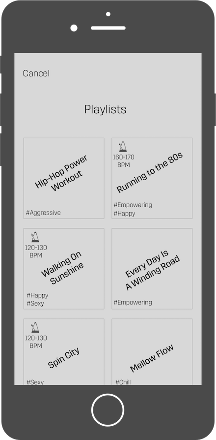
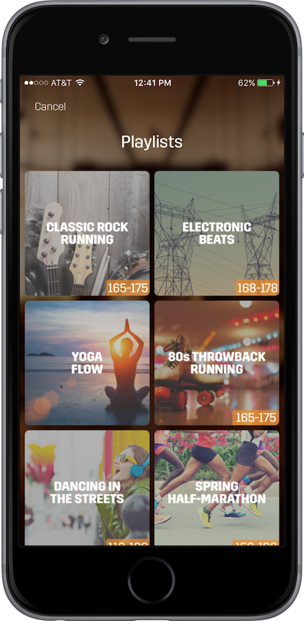
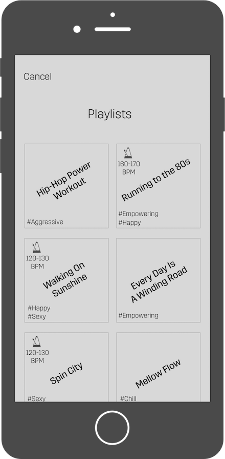
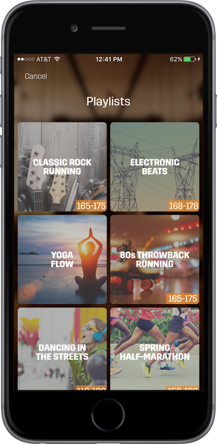

Spring: A rhythm-based music service for exercise (iOS)
Problem
Tiny and novel interface
Technical limitations different from iPhone
Goal
Create a simple and clean watch experience that provides utility to the user in ways unavailable to the standard iPhone app.
Solution
- Allow user to set up, perform and complete an activity entirely iPhone free.
- Display only the most useful live-time GPS and music data.
- Facilitate easy track skipping from the watch face mid-activity.
- Streamline user experience post watch release


 


